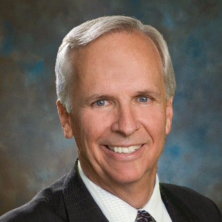

Lance Wells
Managing Attorney, The Americas Law Group, PLLC Thirty nine (yes, its been 39!) years ago this coming October, 2017, a short time after being sworn in to his first “Bar” in 1978, Lance launched his career defending and litigating the constitutional rights of U.S. Citizens in federal courts. The best description of Lance’s work is “problem solver” . That role led to work internationally and domestically as litigation and general counsel to various corporate and individual clients and causes to solve the legal, logistical and political problems of mergers, acquisitions, immigration, criminal and trade transactions in the Americas and Europe. He is frequently referred to as the scrappy street lawyer never giving up until he finds a way to solve the problem for the clients and causes he gets involved in.
Our Mission
ONE BY ONE FOR HOPE is a non-profit organization dedicated to helping individuals, one by one, have access to the essentials of life including hope, love, community with family and opportunity for prosperous self-reliance in a safe, secure location through-out the world. We provide free educational and consulting services for most legal matters (criminal, immigration and civil) and social services. We assist our clients and members to identify honest, reputable, and competent professionals to help in all their legal, medical and social service needs (including foster families for children). When funds are available, we assist our clients and members pay for legal and other types of professional services needed by those we serve